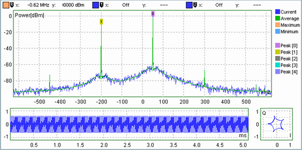
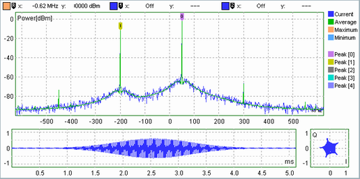
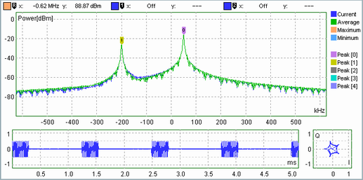

The purpose of the time domain and the IQ diagrams is to monitor the measured time domain samples in parallel with the FFT results. The following examples show the analysis of a continuous or pulsed two-tone signal.

The left time domain diagram has a constant envelope. The IQ constellation diagram contains a Lissajous curve which results from the superposition of the two signal components. The time domain window is not shown in the time domain and IQ diagrams but affects the calculated spectrum in the upper (FFT) diagram.

The left time domain diagram shows the Gaussian time domain window. The Lissajous curve in the IQ constellation diagram is filled because the amplitudes decrease towards the beginning and the end of the measured time domain. The calculated spectrum is unchanged compared to the first example.

The left time domain diagram shows the pulses. The calculated FFT result shows a transient spectrum. Due to the time domain window (not shown in the time domain and the IQ diagrams), the power ramps of the central pulse have the largest influence on the spectrum.